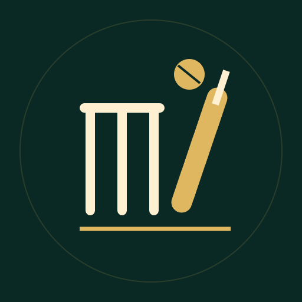

Wicket & Vice
Build a cricket career, master the chase and navigate dangerous favors.
From neighborhood nets to a floodlit franchise league, your all-rounder owes their first selection to a powerful patron, and every favor has an expiry date. Play both innings of a full T20 fixture ball by ball, choosing deliveries and strokes, managing wickets and runs and preparing spin, pace or an all-rounder approach. A shorter five-over practice helps you learn the rhythm. Away from the match, work through 36 story encounters with 12 recurring characters, where choices shape trust, debt, community support and relationships, and earlier decisions come back later. Balance training, recovery, sponsors and club improvements across a 12-fixture season, with three career backgrounds and retirement legacies.